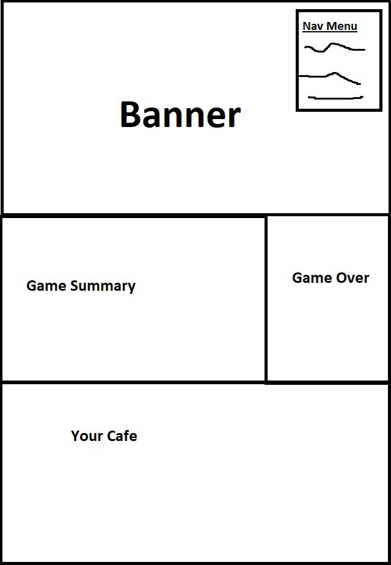

The goal for this site was to be mostly just to find a fun way to make a game page for one of my proudest projects. The design I used was chosen for the 4 distinct sections it displayed:
I though these sections would make it quite interesting to adapt to a game page. Since the game had a lot of really cute art that I wanted to display and because I could swap out the items list with the customer type list.
Adapting the orginal design I referenced was more challanging than I thought it would be. For starters, it took me way too long to get the banner in a state that I liked it. Then I tried fiddling around with the 3 other sections and that made me waste a whole lot of time. I decided to start over and try and tackle each section 1 by 1. The game summary was basically left the same from my intial site setup however, I took time to try and learn the float property so I could get the text to somewhat wrap around the screenshot like in the magazine. As for the Game Over section, I tried experinmenting with grids at first but found just floating the header to the left both much easeir and efficent to adjust. Lastly, the final items section took me the longest out of all of them and I still am not the proudest of it. It definitely isn't my best work but I believe it matches up to the original reference the best I can.
When I had originally started working on this site I had divided it up into grids but most of them didn't make it into the site. However, I do think this division help me plan out the site which is why I am including it.

For navigation I will be keeping things simple and wil just be putting a box in the top right menu that contains the main sections of the site. Split into [Home], [Game Summary], [Game Over], and [Your Cafe]
